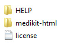
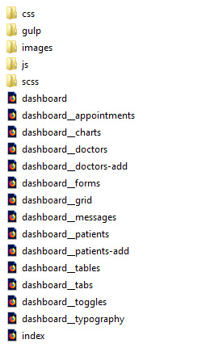
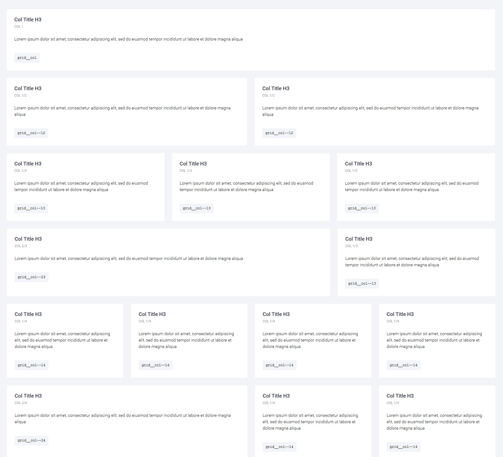
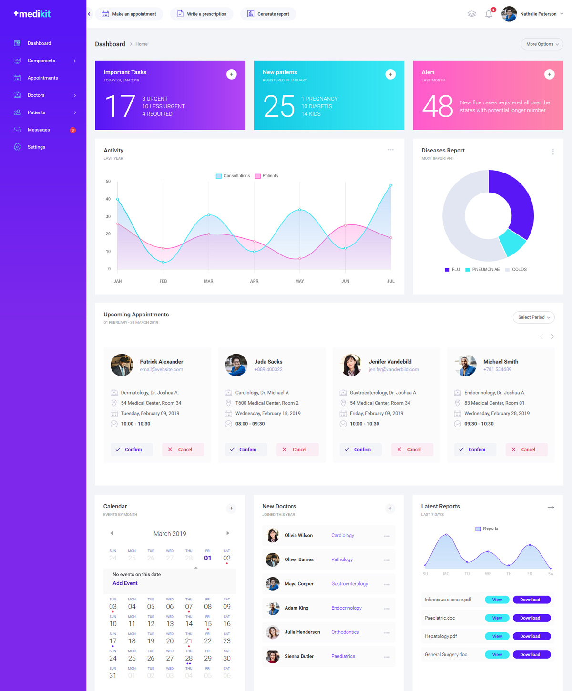
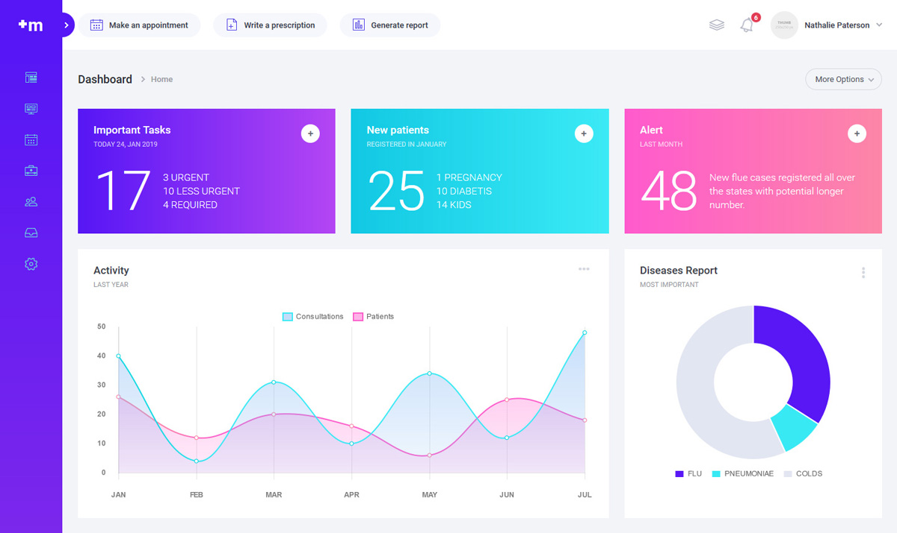

1 Introduction
MEDIKIT is an HTML UI KIT created for medical companies that want to build a medical app. The template includes the Landing page and the Administration Dashboard designs. The layout is built using an original design concept, some amazing features, customizable elements and a perfect responsive code.
1.A What is a HTML/CSS template? Definition and usage
A HTML/CSS Template is a pre-designed layout that will help you build a final website. HTML ( HyperText Markup Language) is the basic coding to create web pages. CSS stands for Cascading Style Sheets and it's used to define and style the HTML elements. HTML is used to allow a plain text file to display a formatted website with text, images, scripts, animations, forms and other website elements. HTML is the language used by web browsers to dynamically format and display web pages.
A regular HTML/CSS template does NOT include a CMS (Content Management System) to edit/add content of the pages. All content is edited using a HTML editor. HTML editors can be found as free and paid editors. Some modern HTML editors have included a DESIGN view mode of the code, making it easier for templates to be edited. Regular ones will let you edit the content only from the code mode, meaning you will need to have a basic HTML coding knowledge.
1.B What is a Landing Page?
The "landing page" term is used for a standalone web page created specifically for the purposes of marketing and advertising your services. Usually a landing page is one single web page, and all important content is included in that page only, designed with a single focused objective – known as a Call to Action (CTA).
1.C Package files content
The template includes a landing page and the administration panel template. The package you downloaded from themeforest include the following structure:

The main html files are found inside the "MEDIKIT-html" folder. The HELP folder includes the documentation.
Inside the "MEDIKIT-html" folder you will see the following structure:

The main landing page is index.html and the dashboard files are the ones starting with "dashboard__".
1.D Installing this template
To install this landing page you will need to copy all the files included in one demo folder to your web server root folder. If you don't have a hosting account and a domain, you will need to register one and link it to a hosting server. The main index.html file will be the main page users will see when entering your web domain url.
To enter directly in the admin section open dashboard.html
2 Editing the template HTML layout
A regular HTML/CSS template does NOT include a CMS (Content Management System) to edit/add content of the pages. All content is edited using a HTML editor. HTML editors can be found as free and paid versions. Some modern HTML editors have included a DESIGN view mode of the code, making it easier for templates to be edited. Regular ones will let you edit the content only from the code mode, meaning you will need to have a basic HTML coding knowledge. A good free HTML editor is Notepad++.
For fast development we have included a gulp file and SCSS files.
SASS and the SCSS file are CSS extensions that will help you work faster when editing this template. More info about SASS can be found HERE
The gulp file is located inside the "gulp" folder. This with NODE installed will help you automate your workflow. More info about GULP can be found HERE
Both GULP and SASS required knowledge on how to use them, and they are not required in this template if you don't know them. You can simple use the CSS files in the CSS folder. More info about working with GULP can be found here HERE
2.AGeneral HTML structure
The classes names are built using the BEM (Blocks, Elements and Modifiers) methodology. This is a new smart way to write HTML/CSS code that can easely be reused.
More about BEM here.
The structure follows this elements/sections order:
header........./header
sections......./sections
footer........./footer
The layout starts with the
header class="header"
Inside the header we will find the logo and the menu
div class="header__logo-title"
nav class="header__menu"
Continues with the sections
section class="section"
And finish with the footer
footer class="footer"
2.C Intro Section
The intro section contains the main title, subtitle, description and in some demos an animation.
The main titles and subtitles look like
<div class="intro__title"><span>Powerful services</span> for powerful applications</div>
<div class="intro__subtitle">We belive we have created the most efficient SaaS landing page for your users. </div>
<div class="intro__description">For as low as <span>$0.95</span> per user account</div>
The animation usually is a PNG or GIF image.
<div class="intro-animation">
<img src="images/intro-animation.png" alt="" title=""/>
</div>
In the intro section there are also some SVG elements included, that make that nice curved or rectangular shapes in the main view.
An example of a SVG is
<svg class="svg-intro-bottom" xmlns="http://www.w3.org/2000/svg" viewBox="0 0 100 100" preserveAspectRatio="none">
<path d="M0,70 C30,130 70,50 100,70 L100,100 0,100 Z" fill="#ffffff"/>
</svg>
Do not modify this SVG path unless you know what you are doing. But you can easily change the color but editing the fill="#ffffff"
2.D Content Sections
Content sections includes all the details information about your services. Can be "About", "Contact", "Testimonials" sections or any custom section that you want to add to your website. In our main demos we have included a few pre-defined section.
Generally a section start with:
section class="section"
And follows by an ID which is used to link the menu navigation to it:
id="about"
You can customize your section by adding a new BEM class like "section--features" to your "section" main class:
section class="section section--features" id="features"
Each section can have main header and a main description
<h2 class="section__title section__title--centered">Features designed for you</h2>
<div class="section__description section__description--centered">
We belive we have created the most efficient SaaS landing page for your users. Landing page with features that will convince you to use it for your SaaS business.
</div>
Following the title and the description can be a grid text content, or any other custom content.
For example in the "Features" section we have a smart grid layout on 3 cols like:
<div class="grid grid--3col grid--features">
<div class="grid__item">
<div class="grid__icon"><img src="images/icons/icons-64-violet/responsive-64.png" alt="" title=""/></div>
<h3 class="grid__title"><span>Responsive</span> Layout Template</h3>
<p class="grid__text">Responsive code that makes your landing page look good on all devices (desktops, tablets, and phones). Created with mobile specialists.</p>
</div>
<div class="grid__item">
<div class="grid__icon"><img src="images/icons/icons-64-violet/desktop-chart-64.png" alt="" title=""/></div>
<h3 class="grid__title">SaaS Landing Page <span>Analysis</span></h3>
<p class="grid__text">A perfect structure created after we analized trends in SaaS landing page designs. Analysis made to the most popular SaaS businesses.</p>
</div>
<div class="grid__item">
<div class="grid__icon"><img src="images/icons/icons-64-violet/browser-64.png" alt="" title=""/></div>
<h3 class="grid__title">Smart <span>BEM</span> Grid</h3>
<p class="grid__text">Blocks, Elements and Modifiers. A smart HTML/CSS structure that can easely be reused. Layout driven by the purpose of modularity.</p>
</div>
</div>
2.F Admin Dashboard
For this template we are using a custom Smart CSS Grid built by us. This split the layout in many different width options. Create custom columns and elements.
If you will open the dashboard__grid.html page you will see the default structure of the gris:

The majority of the dashboard sections are using the GRID principles and classes.
The dashboard HTML structure starts with the class="dashboard-wrap"
Following by the HEADER, SIDEBAR and MAIN CONTENT

The sidebar can be toggled using the div class="sidebar-resize"
// Sidebar resize
$(".sidebar-resize").on('click', function(e) {
$(this).toggleClass('enlarge');
$("#sidebar").toggleClass('sidebar--dinamic');
$(".sidebar-header__logo").toggleClass('logo--dinamic');
$(".sidebar-menu").toggleClass('menu--dinamic');
if ($( ".sidebar-menu__submenu" ).hasClass( "active" ) && $( "#sidebar" ).hasClass( "sidebar--dinamic" )) {
$(".sidebar-menu__submenu.active").slideUp();
}
else {
$(".sidebar-menu__submenu.active").slideDown();
}
});

3 CSS and SCSS files
There are included more CSS and SCSS files in the template
The landing page CSS files included
<link rel="stylesheet" href="css/swiper.css">
<llink rel="stylesheet" href="css/animate.css">
<llink rel="stylesheet" href="css/style.min.css">
<llink href="https://fonts.googleapis.com/css?family=Roboto:300,400,500,700,900" rel="stylesheet">
The dashboard CSS files included
<llink rel="stylesheet" href="css/swiper.css">
<llink rel="stylesheet" href="css/jquery.scrollbar.css">
<llink rel="stylesheet" href="css/daterangepicker.css">
<llink rel="stylesheet" href="css/select2.css">
<llink rel="stylesheet" href="css/ion.rangeSlider.min.css">
<llink rel="stylesheet" href="css/dashboard.min.css">
<llink href="https://fonts.googleapis.com/css?family=Roboto:300,400,500,700,900" rel="stylesheet">
We are including a minified version of the main CSS, but you can use the normal one inside the CSS folder.
And for fast development use the SCSS file in the SCSS folder.
4 JavaScript files
There are more Javascript files used in the template. They are loaded at the end of the HTML file
The landing page JavaScript files included
<script src="js/jquery-3.3.1.min.js">
<script src="js/swiper.min.js">
<script src="js/jquery.paroller.min.js">
<script src="js/menu.js">
<script src="js/jquery.custom.js">
<script src="js/swiper.custom.js">
The custom functions file for the landing page is
<script src="js/jquery.custom.js">
The dashboard JavaScript files included
<script src="js/jquery-3.3.1.min.js">
<script src="js/Chart.min.js">
<script src="js/chartjs-plugin-style.min.js">
<script src="js/charts-custom.js">
<script src="js/moment.min.js">
<script src="js/calendar.js">
<script src="js/swiper.min.js">
<script src="js/select2.min.js">
<script src="js/jquery.scrollbar.js">
<script src="js/daterangepicker.min.js">
<script src="js/ion.rangeSlider.min.js">
<script src="js/jquery.dashboard-custom.js">
The custom functions file for the dashboard is
<script src="js/jquery.dashboard-custom.js">
5 Sources and Credits
- jQuery - from http://jquery.com/
- Swiper - http://idangero.us/swiper/
- Free icons - https://www.ego-icons.com/
- Demo photos - unsplash.com
- Page elements animation - https://tgomilar.github.io/paroller.js/